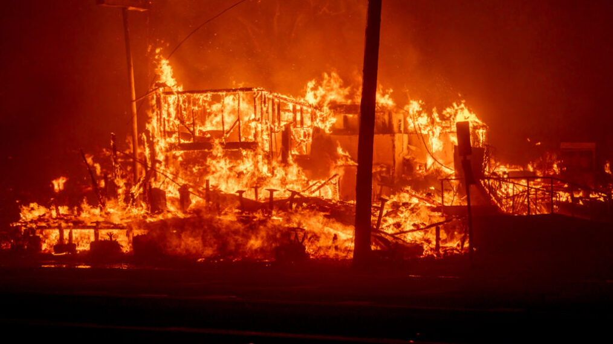

After the Palisades Fire destroyed her son’s high school, Shoshanha Essakhar found herself among the thousands of Los Angeles County parents wondering what to do.
I was thinking, ‘Oh my God, we’re going to be doing Zoom for the next God knows how long,’” said Essakhar. “It was a lot of fear, a lot of uncertainty.”
The fire devastated Palisades Charter High School, where Essakhar’s son was a ninth grader, as well as two elementary schools in the Los Angeles Unified School District.
The Eaton Fire, which broke out around the same time in early January, severely damaged or destroyed six school facilities in Pasadena Unified School District. Together, the fires disrupted learning for more than 725,000 kids and displaced thousands of students from their schools, their homes or both.
But roughly a week later, Beverly Hills Unified School District abruptly stopped accepting students displaced by the fires, closing the door on Essakhar’s son and dozens of other students who expected to spend the semester at Beverly Hills High.
As a mom, you try to do your best for your child, but it got so unpleasant,” Essakhar said.
Beverly Hills school leadership said it could not afford to accept additional students, nor did it need to: Students who lost their school but whose homes were still intact did not need their help.
The dispute between Beverly Hills Unified School District and some Palisades parents raises questions that school districts across the U.S. increasingly must grapple with as wildfires and other extreme weather events become more common because of climate change: What does a school district owe its neighbors after a major disaster?
For Beverly Hills Unified, the answer was admitting 47 students before pausing enrollment over concerns that a surge of newcomers midyear would siphon resources from the district’s 3,000-plus existing students.
“You’ve got a community where a lot of those folks lost their homes, and half lost their school but their homes weren’t impacted,” said Los Angeles Unified School District board member Nick Melvoin, whose district includes Palisades Charter High School. Like Beverly Hills, its students are predominantly from affluent backgrounds.
Newsom’s order was an attempt at a fix: It urged districts to “extend every effort to support and facilitate the enrollment of students displaced by the fires.” Lori Peek, director of the Natural Hazards Center at the University of Colorado, Boulder, which focuses on the societal effects of disasters, said it “provided the necessary flexibility that disaster survivors really need, because their circumstances are so diverse.”
In Beverly Hills, school board members resisted the order. Beverly Hills is one of the few “basic aid” districts in the state, meaning it collects more in local property tax revenue than an annual funding target set by the state, which is based on average daily attendance and other factors. Most districts fall short of the target, and the state makes up the difference.
At a series of meetings in January and February, Beverly Hills school board members argued that the district couldn’t absorb additional students without harming those already enrolled. While other school districts see increased funding from increased attendance, that’s not true for basic aid districts like Beverly Hills.
Board members also questioned whether students who lost their schools, but not their homes, such as Essakhar’s son, should be considered affected by the fire and able to enroll. Board members told district administration that they believed only students whose homes were destroyed should qualify.
Not so, said Melissa Schoonmaker with the Los Angeles County Office of Education, which provided guidance to the county’s school districts on implementing the order. “It’s not that they had to lose their home or be evacuated, it could be a broad range of impacts,” she said.
Board members supported making this pause permanent.
“Going forward we are closed to any enrollment that comes right now as a result of a student going to Pali who has not been displaced from their home but would like to come to Beverly Hills because they don’t want to go on Zoom,” board President Rachelle Marcus said at the meeting, referring to Palisades Charter.
Essakhar, who lives in Brentwood, a Los Angeles neighborhood roughly halfway between Beverly Hills and the Pacific Palisades, called the entire process traumatic.
She gave up on finding an in-person school option for her son, settling instead for Zoom through Palisades Charter. “Honestly, I didn’t want to go through the experience again,” she said. Plus, most of his friends who left Palisades Charter had enrolled at Beverly High. “Being with your group of friends is different than sending my kid alone to some other school to transition in the middle of the year after the fires on his own,” said Essakhar.
Another Palisades Charter parent, Negeen Ben-Cohen, was initially optimistic that the school would quickly secure a temporary campus. But as the weeks went by, she started considering other options for her ninth grader.
Like Essakhar, Ben-Cohen filled out all the necessary paperwork to enroll her son and was told she would hear soon about his class placements. Then enrollment was paused.
“They shut the door in our faces. And that was after the kids got their hopes up, they think that they’re going to be able to go in-person, they think they’re going to be able to start with their friends,” said Ben-Cohen.
At board meetings, parents and students expressed similar outrage.

The January fires in Southern California disrupted learning for more than 725,000 students. Credit: Jason Armond / Los Angeles Times via Getty Images
“We do not even want to get an education in a school that kicks others while they are down, you have lost the opportunity to teach your students how to be there for each other,” said another Palisades student, junior Rosha Sinai, calling the board “selfish.”
Jason Hasty, the interim superintendent of Beverly Hills Unified School District, said in an interview that enrolling any more than 47 students would have strained the district’s resources and required hiring more teachers — although he acknowledged that his district is better funded than most.
“We get more money than the state formula because of the way we’re funded. That is a fact. Also what is a fact is on July 1 of every year, we set a budget … based on the students we are projecting to have,” Hasty said.
.jpg)
Palisades Elementary Charter School, which was devastated by the wildfires in January. Credit: Jason Armond / Los Angeles Times via Getty Images
State Sen. Ben Allen, who represents both the Pacific Palisades and Beverly Hills areas, said that Beverly Hills would be compensated for taking in displaced students, although the details are still being worked out.
“We’re going to have their backs and that they’re going to be fully compensated for any students that they take in,” he said.
Hasty said the district has been “in direct discussion” with Allen’s office, but “until we are sure that those funds are materializing and will be provided,” the pause on enrollment under the executive order (which expires at the end of the school year) remains in place. The district continues to enroll students who move to Beverly Hills or who are eligible under the McKinney-Vento Act, said Hasty. That legislation provides protections for students who are homeless, which is defined as “individuals who lack a fixed, regular, and adequate, nighttime residence.”
Nearby Santa Monica-Malibu Unified School District is also a basic aid district, but it interpreted the order “to mean that any student who wants to come here can come here right now,” said Gail Pinsker, the district’s chief communications officer. So far, the district has enrolled more than 140 students, with about 200 enrollment requests still being processed. The influx of students prompted the district to combine some elementary classes and hire a new high school teacher, Pinsker said.
Three months after Palisades Charter High School burned, students remain on Zoom. The school just finalized plans to use an old department store building in downtown Santa Monica about 20 minutes southeast of the high school as its temporary campus. In-person instruction should resume sometime after the school’s spring break in mid-April, according to Palisades Charter High School.
Kyle Grillot/Bloomberg via Getty Images
Allen, the state senator, said the episode shows the need for a policy for compensating basic aid districts that take in displaced students to make the process smoother after future disasters.
Also helpful would be a website listing districts accepting affected students, said Peek, the University of Colorado researcher.
Lessons from the Los Angeles fires could inform policymaking elsewhere, she added. “They’re going to need it sooner rather than later, as other disasters continue to unfold across the country.”